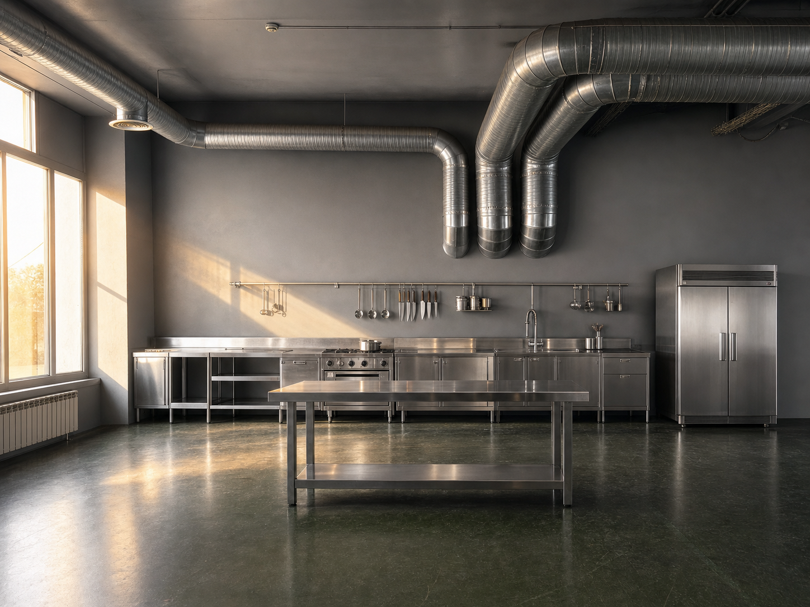
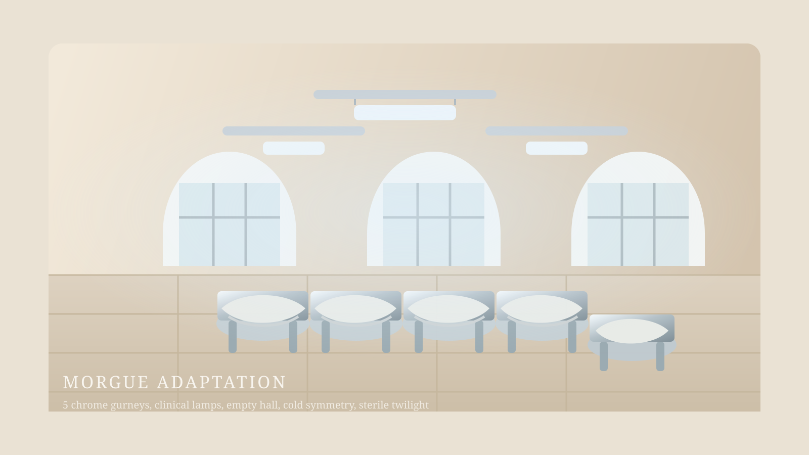
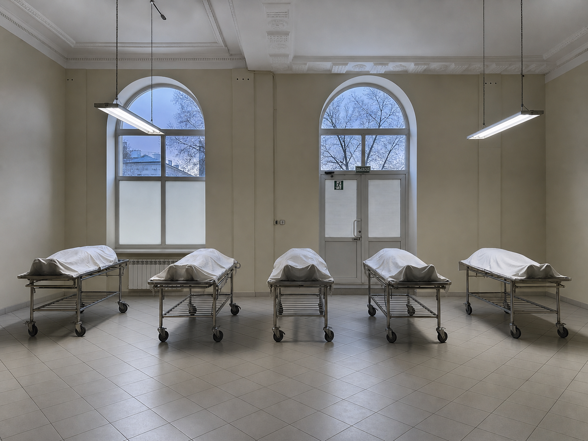
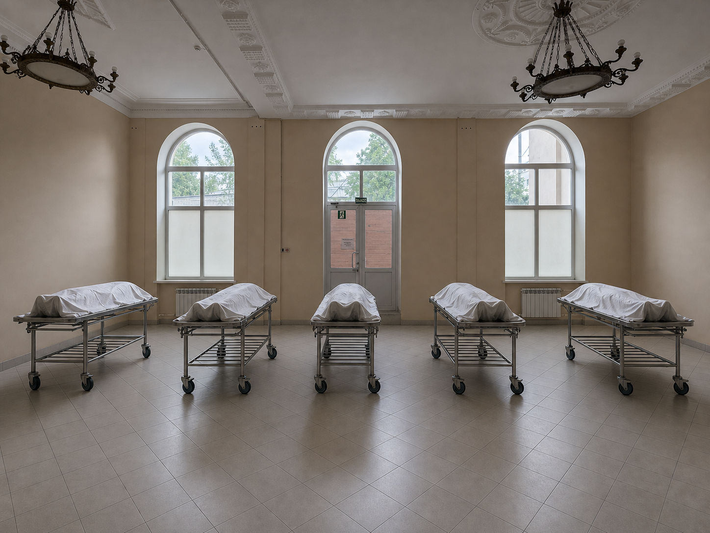

01
Kitchen
Индустриальная кухня с хромированной рабочей линией, закатным светом и холодной функциональностью.
Taste of Blood
Рабочая презентация по трем локациям проекта «Вкус крови»: кухне, моргу и основному залу вампиров. Задача страницы — быстро показать исходные пространства, будущий редрессинг и атмосферу для согласования с командой.
Что нужно от страницы
Overview
По встрече от 3 июня 2026 года это не просто подбор площадок, а черновая production design-презентация: наглядно показываем, как локации могут выглядеть после вмешательства художки.
01
Индустриальная кухня с хромированной рабочей линией, закатным светом и холодной функциональностью.
02
Светлое стерильное пространство с клинической пустотой и подчеркнутой симметрией.
03
Главный зал с тяжелым столом, скамьями, хромом, стеклом и сумрачной ритуальной атмосферой.
Location 01
Базовая индустриальная площадка под съемку всей истории с едой. Главное — не убить заводской скелет пространства, а встроить в него длинную хромированную рабочую кухню.


Location 01 Kitchen
По транскрибации первая кухня должна остаться в текущей серо-зеленой индустриальной гамме, но стать чистой и хирургически собранной: цветной задник перекрывается серой стеной, слева исчезает мусор, справа уходит черная тряпка, а вдоль дальней стены выстраивается сплошная хромированная линия из столов, плиты, мойки и холодильника.
Над рабочей линией висит длинный рейл с редкими половниками и ножами, в центре ближе к камере появляется отдельный хромированный рабочий стол, а из окна слева в комнату входит закатный теплый луч.

Kitchen Prompt
Photorealistic production design previs over the provided reference photo of an industrial interior. Keep the original camera angle, lens perspective, framing, ceiling ducts, walls proportions, windows on the left, and existing dark green floor exactly as in the source image. Transform the space into a clean professional industrial kitchen for a film set. Required changes: - Remove all clutter, stacked chairs, wrapped objects, carts, loose fabric on the floor, and all junk from the left side near the windows. - Remove the black curtain on the right side. - Fully cover the colorful back wall and doors with a flat matte gray temporary scenic wall, so the rear background reads as one continuous gray wall. - Preserve the exposed silver air ducts on the ceiling and keep the floor unchanged. - Along the back wall, install one long continuous line of stainless steel commercial kitchen equipment: prep tables, a built-in sink section, a stainless steel stove, more prep surfaces, all aligned horizontally along the wall. - Add a tall stainless steel industrial refrigerator on the right side of that same kitchen line, masking the white electrical panel area. - Above the kitchen line, mount a long metal rail with a few hanging ladles, knives, and sparse kitchen utensils. Do not overcrowd it. - Place one separate stainless steel work table in the midground, parallel to the back wall, centered for a cook's working position. - Keep the space minimal, geometric, clean, and almost surgical. No decorative objects, no cozy home details, no visual clutter. - Mood: cold, professional, sterile, functional, cinematic. - Lighting: realistic warm sunset rays entering from the left windows, casting soft golden highlights across the otherwise cool gray and metallic interior. - Material emphasis: brushed stainless steel, matte gray scenic wall, industrial surfaces, subtle reflections, realistic shadows. Style targets: high-end photorealistic film set previs, cinematic realism, believable set dressing, production design visualization, seamless integration into the existing photo. Important: Do not change the architecture. Do not move the ducts. Do not change the floor material. Do not invent extra windows or furniture. Everything must look physically plausible and naturally composited into the original photo.
Kitchen Prompt
cartoon, illustration, painterly, sketch, low poly, 3d render look, stylized concept art, fantasy set design, surreal architecture, futuristic sci-fi kitchen, glossy showroom kitchen, cozy home kitchen, rustic kitchen, warm domestic interior, luxury loft, excessive props, decorative clutter, hanging plants, wooden cabinets, colorful walls, visible original mural, visible colorful doors, black curtain, stacked chairs, junk piles, people, chef, character, body, distorted perspective, changed camera angle, changed floor, changed ceiling ducts, invented windows, exaggerated sunlight, overexposed highlights, fake reflections, fisheye distortion, bad anatomy, blurry, low resolution, noisy image, washed out materials, unrealistic compositing, overdesigned scene, too much set dressing
Kitchen Output
Ниже добавлена фотореалистичная превиза по исходному фото кухни и по сформулированному prompt. Она идет как отдельный слой наполнения: рядом с рисованной схемой, чтобы можно было сравнивать постановочную логику и более реалистичную подачу.

Location 02
Самая чистая по базе площадка. Важнее всего подчеркнуть стерильность, арочную симметрию и тревожную пустоту, а не перегрузить ее деталями.


Morgue Clean Plate
Для ручной зачистки берем за мастер-кадр именно
space-1.2.jpg. У него фронтальнее композиция, все три
арочных окна читаются яснее, а правый проем меньше рискует
“схлопнуться” в дальнейших проходах.
На текущем этапе люстры сознательно не трогаем: правая люстра слишком близка к правому окну и, по нашим тестам, именно ее удаление чаще всего ломает архитектуру и “гасит” третье окно.
Morgue Lighting
После clean plate следующий этап — только световая логика. На этом проходе не добавляем кушетки и не трогаем архитектуру: задача в том, чтобы закрепить медицинский характер помещения и не потерять три окна.
Пока люстры остаются в кадре как временный технический компромисс. Мы сперва удерживаем окна и геометрию, а уже потом решаем, убирать ли люстры локальным отдельным проходом.
Morgue Risk
По нашим тестам главная зона риска — правая люстра и правый верхний сектор кадра. Когда модель пытается убирать эту люстру глобально, она часто захватывает арку, откос и свет правого окна, после чего схлопывает его в стену.
Morgue Staging
На этом проходе в уже очищенное и освещенное помещение добавляются только кушетки с телами под простынями. Архитектура, окна, дверь и световая база остаются зафиксированными с предыдущих этапов.
Morgue Workflow
Для морга лучший путь сейчас не “еще один большой prompt”, а
разделение на контролируемые этапы. Codex держит структуру,
проверку и публикацию, а точечную сохранную ретушь лучше делать в
редакторе по исходнику space-1.2.jpg.
Подробная рабочая инструкция вынесена в docs/morgue-production-workflow.md.
Location 02 Morgue
По транскрибации морг должен стать почти полностью зачищенным пространством: убираются люстры, цветы, скамейки и столы, а помещение собирается как пустой клинический зал с жесткой симметрией и тревожной стерильностью.
Вместо люстр появляются две спускающиеся больничные люминесцентные лампы, а в центре кадра выстраиваются пять хромированных кушеток с накрытыми телами. Свет можно мыслить в двух режимах, но базовое ощущение здесь — холодная чистота и тишина перед действием.

Morgue Prompt
Photorealistic production design previs composited over the provided original reference photo of the morgue location. Use photo 1 in this block as the exact base image. Keep the original photo composition exactly. Preserve the exact camera angle, framing, lens perspective, room width, wall proportions, central doorway, tiled floor pattern, and most importantly all 3 arched windows on the back wall exactly as in the source image. Do not remove, add, resize, merge, or shift any window. The architecture must remain identical to the original photograph. Transform the room into a sterile morgue film-set adaptation. Required set changes: - Remove both hanging chandeliers. - Remove all plants, benches, side seating, and tables. - Clean the room completely so it feels empty and clinically prepared. - Add 2 suspended hospital-style fluorescent light fixtures in place of the chandeliers, with believable rigging. - Arrange 5 chrome medical gurneys in the room, perpendicular to the windows. - 4 gurneys should form the main orderly composition. - The 5th gurney should be slightly offset to the left, subtly disturbing the symmetry. - Each gurney contains a body fully covered by a pale sheet, with only a faint leg or foot silhouette visible beneath the fabric. - Keep the room minimal, cold, metallic, and practical. - Preserve the pale walls and tiled floor from the original location. - Lighting should feel clinical and cold, with soft twilight coming through the windows and subtle reflections on the floor. - Mood: sterile, quiet, unsettling, realistic, cinematic, but not theatrical. Critical constraints: - Keep all 3 arched windows visible exactly as in the original image. - Keep the central door visible exactly where it is. - Do not change the architecture. - Do not invent new walls, openings, furniture, or props. - Do not crop out the right side of the room. - Do not simplify the room into a different hall. - The result must look like a realistic art department previs painted directly over the original photograph. Style targets: high-end photorealistic film set previs, believable production design visualization, natural integration into the source photo, realistic materials, realistic shadows, realistic proportions.
Morgue Prompt
changed architecture, missing window, extra window, two windows instead of three, altered wall proportions, shifted doorway, removed right side of room, incorrect framing, new room layout, fantasy horror, gore, blood, zombies, monsters, supernatural smoke, heavy fog, candlelight, warm cozy mood, homey interior, decorative furniture, chandeliers, plants, benches, tables, clutter, doctors, nurses, visible faces, dramatic poses, sci-fi medical lab, futuristic hospital, glossy render look, stylized concept art, cartoon, illustration, blurry image, low resolution, fisheye distortion, unrealistic reflections, bad compositing
Morgue Output
Ниже добавлена фотореалистичная превиза по исходному фото морга и по сформулированному prompt. Она показывает зачищенный зал с холодным клиническим светом, удаленными люстрами и расстановкой пяти хромированных кушеток.

Morgue Output
Ниже новая более безопасная версия превизы: люстры пока оставлены, зато сохраняются все 3 окна, дверь и исходная геометрия кадра. Это текущая рабочая версия staging-прохода, где уже убраны лишние объекты и добавлены 5 кушеток.
Эту картинку считаем текущей рабочей базой для следующих трансформаций по моргу. Дальше двигаемся именно от нее, чтобы не потерять стабильную архитектуру кадра.

Morgue Output
Ниже добавлен следующий проход по той же safe-базе: люстры уже убраны, а потолок дополнительно зачищен вручную и локально выровнен по швам, чтобы верх кадра читался цельнее.
Это не замена исходной safe-версии, а ее следующая рабочая итерация для презентации более чистого варианта морга на том же архитектурном каркасе.

Morgue Current Base
Текущая зафиксированная база для продолжения:
assets/images/Morgue/morgue-staging-safe-previs.png
Следующие изменения по моргу делаем уже поверх этого варианта, а не начинаем заново от нестабильных генераций.
Location 03
Это не гостиная в бытовом смысле, а основной зал вампиров: место общего плана, стола, композиции как у темной трапезы и атмосферы скромного, но вычурного богатства.


{kind=link}
{kind=link}
{kind=link}
{kind=link}